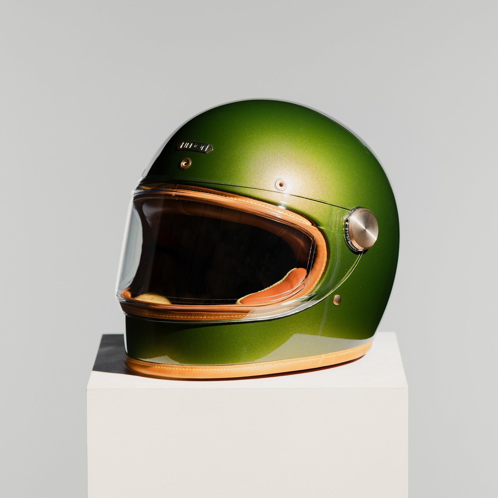

Where to buy a motorcycle helmet worth keeping

The best place to buy a helmet is wherever you can be properly fitted, shown the certification and supported afterwards. These three points matter more than the shop.
Fit
- Try the helmet on; it should feel snug and even, with no pressure points.
- If buying online, check the size guide and the returns policy first.
- A well-fitted helmet is one you forget you are wearing.
Buy where fit, certification and aftercare are all clear.

Certification
Look for ECE 22.06 on the label, and see how SHARP scores the latch.
Aftercare
| Question | Why it matters |
|---|---|
| Is there a returns policy? | Fit is personal; you should be able to exchange a size. |
| Can the helmet be serviced? | Pads and fittings wear and can be replaced. |
| Is support easy to reach? | Good brands answer questions after the sale. |
Browse Hedon's vintage motorcycle helmets or explore Hedon luxury motorcycle helmets. Back to the Hedon home page.